Manual de Usuario
SPACES OS
Guía completa del sistema: alta de cuenta, dashboard, inventario fijo y digital, ciclo comercial (propuestas → campañas), creativos, publicación a DOOHmain, imprenta, operaciones, finanzas y portales del cliente.
Introducción y conceptos clave
SPACES OS es el sistema para operar una red de medios publicitarios exteriores: desde dar de alta las pantallas (fijas y digitales), cotizarlas al cliente, convertir la cotización en campaña, subir los creativos y publicarlos en las pantallas digitales vía DOOHmain, hasta la producción de impresos, la instalación en campo, la facturación y la cobranza.
Conceptos que conviene entender antes de empezar
- Organización / CRM (tenant). Cada empresa que se registra tiene su propio espacio de datos aislado. Todo lo que ves (inventario, clientes, campañas) pertenece a tu organización y nadie más lo ve.
- Roles. El acceso a cada módulo depende del rol del usuario: Dueño Comercial Operaciones Imprenta Finanzas y Cliente externo. Lo que un rol no debe ver, simplemente no aparece en su menú. La matriz completa está en el Anexo A.
- Sitio Fijo vs. Digital. Es la distinción más importante del sistema:
- Fija Espectaculares, vallas, murales, puentes peatonales, mobiliario urbano. Se imprimen y se comercializan por periodo (mensual o catorcenal). La reserva es exclusiva (una cara = ocupada o libre). Su producción pasa por Imprenta y su instalación por Operaciones. Nunca se suben a DOOHmain.
- Digital Pantallas (tipo
PANTALLA_DIGITALo exhibición «Digital»). Se comercializan por slots (por defecto 12 slots de 20 s). «1 slot = 1 campaña». Se publican en DOOHmain.
- Pipeline. Cada campaña «viaja sola» por una línea de etapas (Reservada → … → Lista para facturar) que se calcula automáticamente según lo que va ocurriendo. Ver §10.
- Candado de facturación. Una campaña solo se puede facturar cuando cumple tres condiciones: OC recibida, fotografías comprobatorias y reporte de publicación.
1Alta de cuenta e inicio de sesión
Ruta: /demo/login · Visible para todos (puerta de entrada)
Para qué sirve
Es la puerta de entrada. Desde la misma pantalla puedes iniciar sesión (usuarios existentes) o crear una cuenta nueva. Al crear cuenta se genera una organización (CRM) propia y un primer usuario con rol Dueño, y la sesión inicia automáticamente.
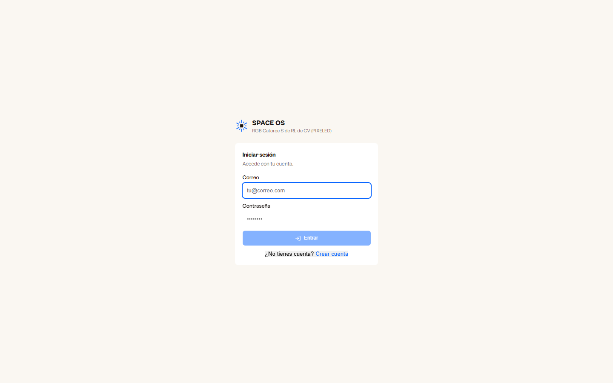
Cómo iniciar sesión
- Escribe tu Correo y Contraseña.
- Presiona Entrar.
- El sistema te lleva a tu pantalla inicial según tu rol.
Seguridad: máximo 10 intentos por IP cada 5 minutos. Credenciales incorrectas muestran «Correo o contraseña inválidos».
Cómo crear una cuenta (registrar tu organización)
- Pulsa ¿No tienes cuenta? Crear cuenta.
- Completa Organización, Tu nombre, Correo y Contraseña (mínimo 6 caracteres).
- Pulsa Crear cuenta. Se crea tu CRM + tu usuario Dueño y entras directo al Dashboard.
A dónde llega cada rol al entrar
| Rol | Pantalla inicial |
|---|---|
| Dueño | Dashboard (/demo) |
| Comercial | Comercial |
| Operaciones | Operaciones |
| Imprenta | Imprenta |
| Finanzas | Finanzas |
| Cliente externo | Portal del cliente (no ve módulos internos) |
2Dashboard
Ruta: /demo · Dueño
Para qué sirve
Vista ejecutiva «de un vistazo» del negocio: ingresos, margen, cobranza, ocupación de la red, alertas, mapa de sitios y campañas próximas a finalizar. Es la pantalla de aterrizaje del Dueño.
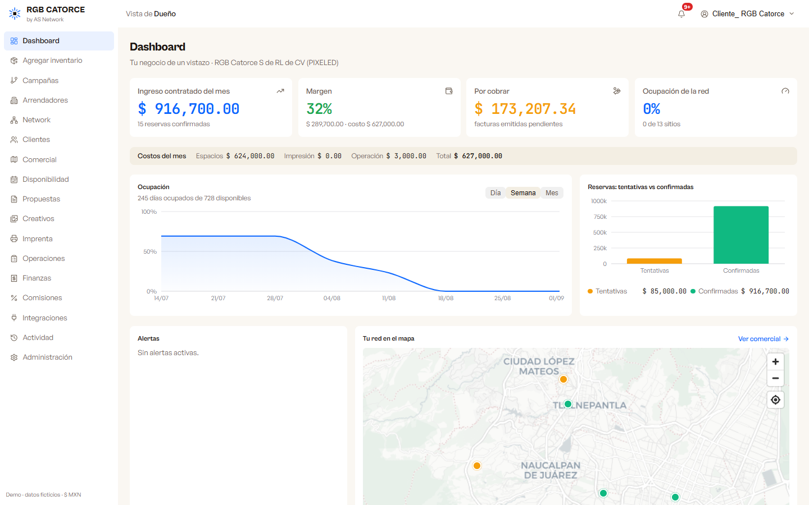
Qué se ve en pantalla
- 4 KPIs: «Ingreso contratado del mes», «Margen» (verde ≥30 %, rojo <10 %), «Por cobrar» y «Ocupación de la red».
- Costos del mes: desglose Espacios · Impresión · Operación · Total.
- Gráfica de Ocupación con selector Día Semana Mes.
- Reservas: tentativas vs confirmadas (ámbar / verde).
- Alertas (hasta 6), Tu red en el mapa (pines por estado) con enlace Ver comercial →, y Campañas por finalizar.
Es una pantalla de consulta: cambia la granularidad de la gráfica, abre una campaña desde su nombre o salta a Comercial.
3Agregar inventario
Ruta: /demo/inventario · Dueño
Para qué sirve
Da de alta y consulta las pantallas/sitios de la operación. Hay tres vistas: Inventario (tabla), Carga masiva (archivo Excel/CSV) y Alta manual (una pantalla). Aquí es donde se define si la pantalla es Fija (impresa) o Digital (pantalla).
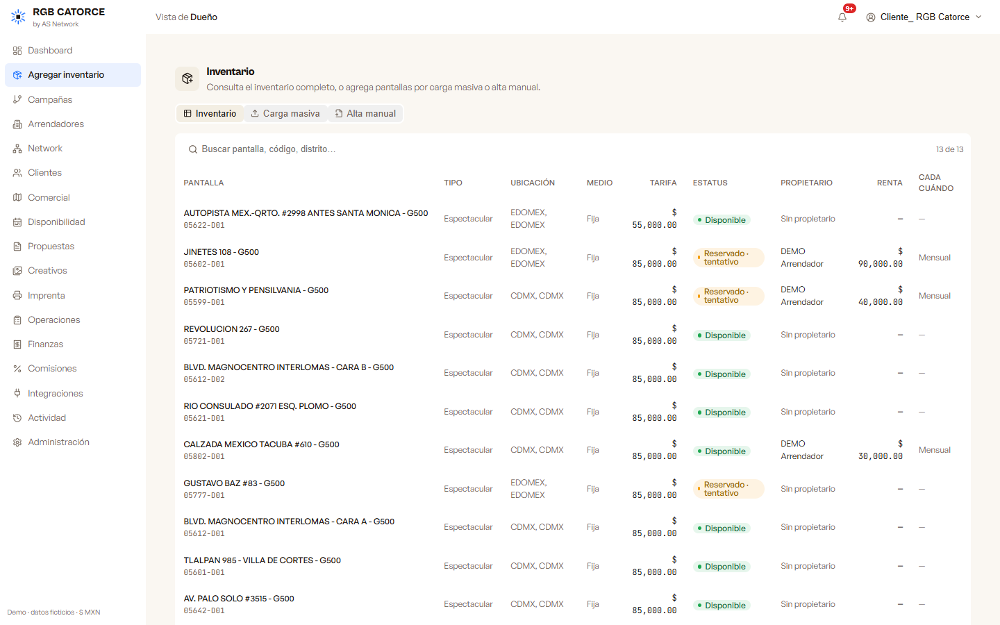
Vista «Inventario» (tabla)
Buscador («Buscar pantalla, código, distrito…») y tabla con columnas Pantalla · Tipo · Ubicación · Medio · Tarifa · Estatus · Propietario · Renta · Cada cuándo. La columna Medio muestra Digital o Fija. Un clic en la fila abre la ficha del sitio.
Cómo hacer una carga masiva
- Entra a Inventario y elige Carga masiva.
- (Primera vez) pulsa Descargar plantilla y llena la hoja «Sitios». Requeridos: nombre, exhibición, unidad, tarifa y costo.
- (Opcional) escribe el precio por m² para pantallas estáticas.
- Arrastra el archivo
.xlsx/.csvy revisa la Vista previa. - (Opcional) sube imágenes en lote nombradas por código de proveedor (
codigo.jpg). - Si hay códigos duplicados, elige Actualizar o Crear nueva versión.
- Pulsa Procesar importación y revisa el resumen (Total · Creadas · Actualizadas · Advertencias · Errores).
Cómo agregar una pantalla DIGITAL (alta manual)
- Inventario → Alta manual.
- Pestaña Básico: nombre, dirección, y en Exhibición elige «Digital (pantalla)»; coordenadas, tipo y estado.
- Pestaña Especificaciones: resolución (p. ej. 1920×1080) y, en «Configuración de slots», duración por slot (20), total (12) y disponibles (12). Si no los capturas, se usan 20/12/12 por ser digital.
- Pestaña IA/Vision (opcional): activa Computer Vision y captura el ID de AdMobilize.
- Pestaña Precios: tarifa publicada y costo de compra.
- Pestaña Imágenes: sube la imagen promocional (obligatoria, máx. 5 MB).
- Pulsa Guardar pantalla.
Cómo agregar una pantalla FIJA
Igual que la digital, pero en Exhibición deja «Fija (impresa)», elige el Tipo (Espectacular, Valla, Muro, Puente, Mobiliario), marca las Modalidades (Mensual / Catorcenal) y captura el Precio por m² si aplica. Los slots no aplican a las fijas.
4Comercial (mapa de inventario)
Ruta: /demo/comercial · Dueño Comercial
Para qué sirve
Es el mapa/plano comercial de todo el inventario. Permite filtrar, seleccionar espacios disponibles y reservarlos, dar de alta pantallas y confirmar/extender reservas tentativas.
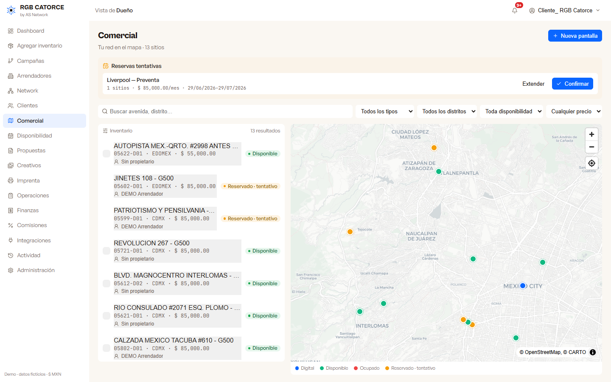
Qué se ve
- Filtros: buscador, tipo, distrito, disponibilidad y precio.
- Lista con checkbox de selección (solo libres), badge de slots (solo digitales) y badge de estatus.
- Mapa con leyenda: Digital (azul) · Disponible (verde) · Ocupado (rojo) · Reservado·tentativo (ámbar).
- Si hay reservas tentativas, una tarjeta ámbar con botones Extender y Confirmar.
Cómo reservar espacios
- Filtra/busca y marca los checkbox de los sitios libres (o abre la ficha del sitio).
- Pulsa Reservar en la barra inferior.
- Captura Cliente (obligatorio), nombre de campaña (opcional), fechas y Tipo de campaña (Automático / Digital / Fijo / Híbrida).
- En pantallas digitales indica cuántos slots reservar por sitio.
- Pulsa Reservar (tentativa). Se crea una reserva TENTATIVA (caduca sola a los 7 días).
Después, en la tarjeta «Reservas tentativas», pulsa Confirmar para volverla firme, o Extender para mover la fecha de fin.
Ficha del sitio
Al hacer clic en un sitio se abre su ficha lateral con estatus, galería, características, datos comerciales (tarifa, costo, margen), propietario y renta, y —solo en digitales— el bloque de slots (total, disponibles, duración, CMS). Con permiso aparecen Editar, Eliminar y, si está disponible, Reservar este sitio.
5Disponibilidad
Ruta: /demo/disponibilidad · Dueño Comercial
Para qué sirve
Calendario de ocupación futura por catorcena o mes. Cruza las reservas vigentes (tentativas + confirmadas) contra el inventario para responder «¿qué tengo libre más adelante?».
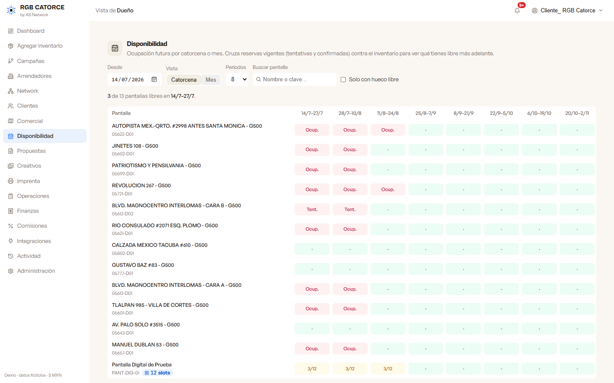
Cómo se usa
- Fija la fecha Desde y elige la vista Catorcena o Mes.
- Ajusta el número de Periodos (4/6/8/12).
- Filtra con «Buscar pantalla» y/o marca «Solo con hueco libre».
- Lee la rejilla: verde = libre, ámbar = parcial (digital con slots), rojo = ocupado; borde punteado = solo reservas tentativas.
usados/total slots y queda parcial mientras le queden slots libres.6Arrendadores
Ruta: /demo/arrendadores · Dueño
Para qué sirve
Gestiona a los propietarios/arrendadores (dueños de los predios donde están las pantallas), sus contratos, la renta que se les paga, los vencimientos y los pagos de renta. Es «el otro lado de la red».
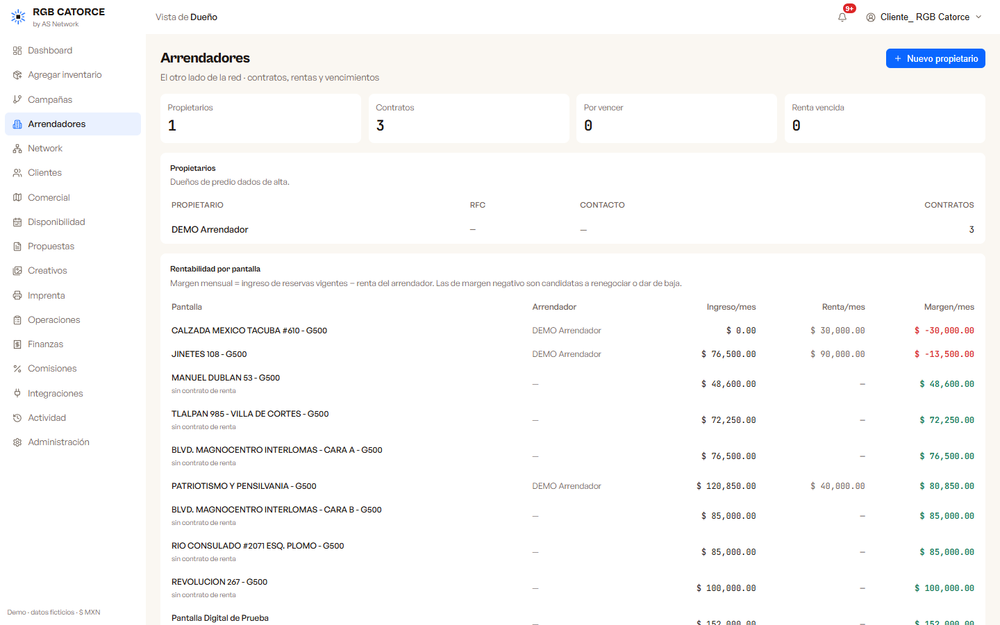
Qué se ve y cómo se usa
- Resumen: Propietarios · Contratos · Por vencer · Renta vencida.
- Rentabilidad por pantalla: margen mensual = ingreso de reservas − renta del arrendador (los negativos, en rojo, son candidatos a renegociar).
- Contratos y Pagos de renta.
Dar de alta un propietario: pulsa Nuevo propietario, captura razón social (obligatoria), RFC, teléfono y correo, y Guardar. Registrar un pago: en «Pagos de renta», botón Registrar pago en el pago pendiente o vencido.
7Network
Ruta: /demo/network · Dueño Comercial
Para qué sirve
Decide qué inventario sin vender se comparte a la Network (red de pantallas de la plataforma), muestra las reglas de comercialización por pantalla (Tradicional vs Programático), el CMS usado y el catálogo de toda la plataforma.
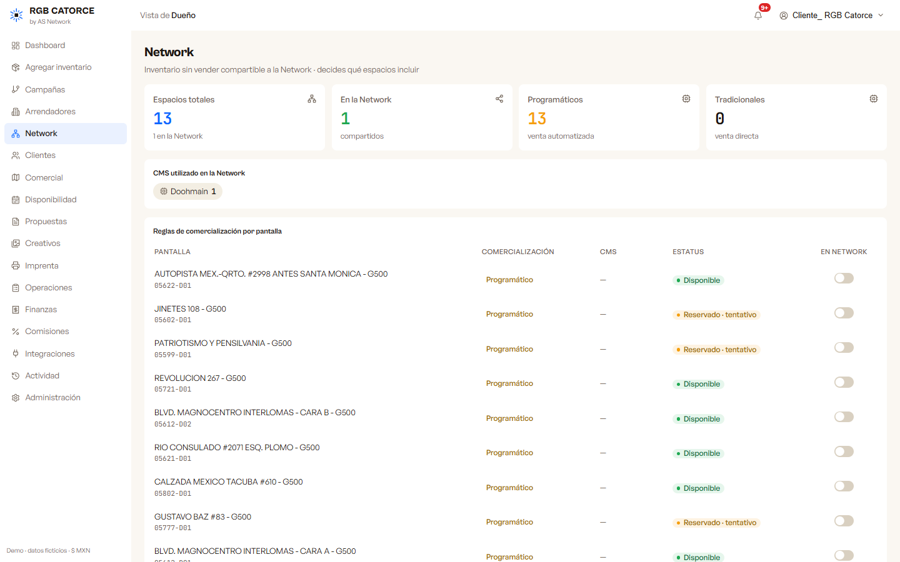
Compartir/quitar una pantalla: en «Reglas de comercialización por pantalla», usa el switch de la columna «En Network». Aparece un aviso: «<pantalla> compartida a la Network» o «quitada de la Network».
8Clientes
Ruta: /demo/clientes · Dueño Comercial
Para qué sirve
Catálogo de clientes/anunciantes con sus datos fiscales. Un cliente es de tipo Directo o Agencia. La agencia porta la comisión y la negociación que condicionan las propuestas.
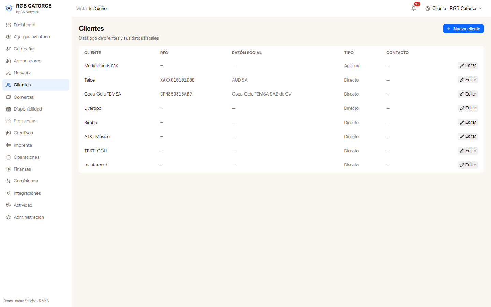
Cómo dar de alta un cliente
- Pulsa Nuevo cliente.
- Captura nombre (obligatorio), tipo (Directo/Agencia), contacto e IVA.
- Si es Agencia: define la comisión (%) y, si aplica, los términos de la negociación y márcala como validada.
- Llena los datos fiscales (RFC, C.P., razón social, régimen y uso de CFDI) y pulsa Guardar.
9Propuestas
Ruta: /demo/propuestas · Dueño Comercial
Para qué sirve
Cotizaciones al cliente calculadas con el método del divisor (bruto → neto de comisión de agencia). Una propuesta contiene sitios con su precio de lista, un descuento comercial y una comisión de agencia. Al aprobarse, se convierte en campaña. Estados: Borrador → Enviada → Aprobada / Rechazada.
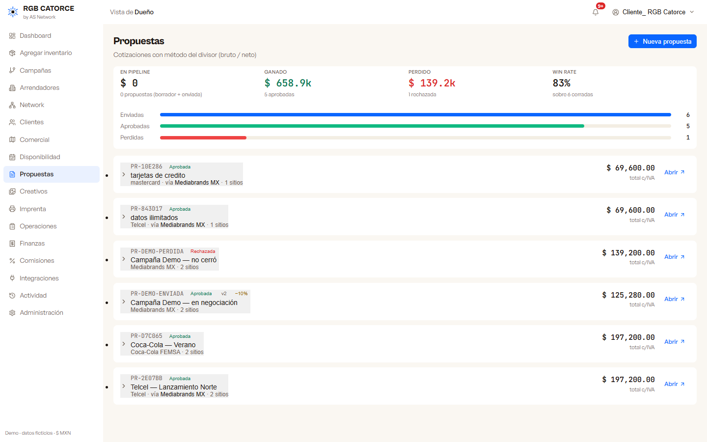
Cómo crear y enviar una propuesta
- Pulsa Nueva propuesta. Captura nombre, cliente y agencia, fechas y comisión.
- Selecciona los sitios (cada uno con badge Digital/Fija). El resumen del divisor (Bruto → Neto → IVA → Total) se calcula en vivo.
- Pulsa Crear propuesta (nace en Borrador).
- Pulsa Enviar para pasarla a Enviada.
- Comparte con el cliente: en el detalle, botón Copiar liga (liga pública por token, sin login).
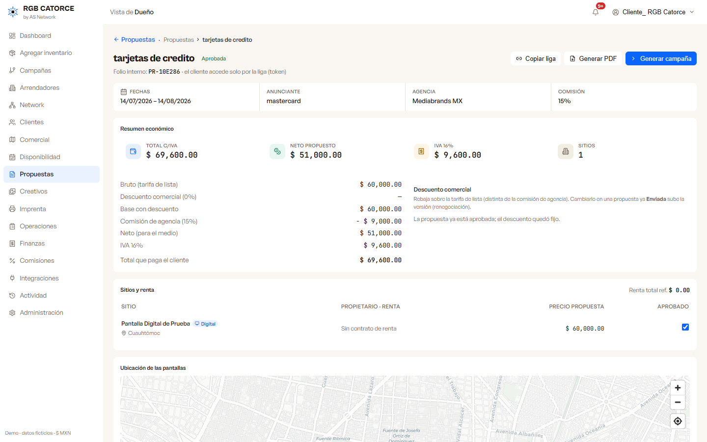
Aprobación y método del divisor
El cálculo: divisor = 1 − comisión%/100; base = bruto − descuento; neto = base × divisor (lo que recibe el medio); total = base + IVA (lo que paga el cliente). Puedes aprobar sitio por sitio (checkbox) y luego pulsar Aprobar. Al aprobar, el importe se congela en un snapshot inmutable y la propuesta queda lista para Generar campaña.
10Campañas y pipeline
Ruta: /demo/campanas · Dueño Comercial
Para qué sirve
Cada campaña «viaja sola por la empresa» a través de un pipeline de etapas que se calcula automáticamente. Nace de una propuesta aprobada. Su tipo (OOH fija, DOOH digital, Híbrida) se deriva del medio de sus sitios.
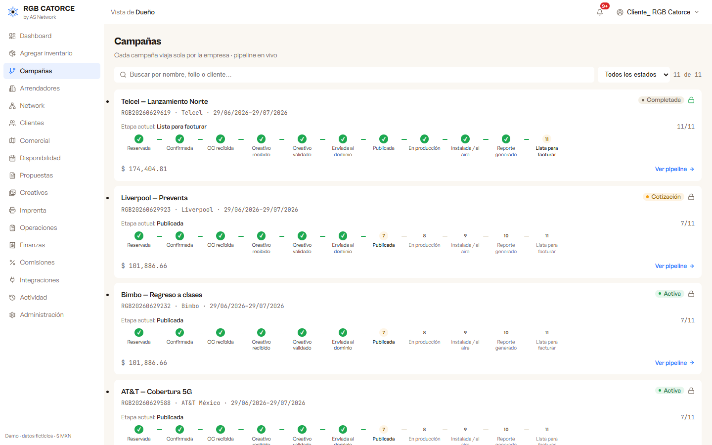
De propuesta a campaña
- En una propuesta Aprobada, pulsa Generar campaña.
- La campaña hereda cliente, fechas y solo los sitios aprobados, con el precio neto del snapshot. Nace Confirmada.
- Es idempotente: si ya existe campaña para esa propuesta, no se duplica.
Las 12 etapas del pipeline
| # | Etapa | Aplica a |
|---|---|---|
| 1 | Reservada | Todas |
| 2 | Confirmada | Todas |
| 3 | OC recibida | Todas |
| 4 | Creativo recibido | Digital / Híbrida |
| 5 | Creativo validado | Digital / Híbrida |
| 6 | Enviada al dominio | Digital / Híbrida |
| 7 | Publicada | Digital / Híbrida |
| 8 | En imprenta | Fija / Híbrida |
| 9 | En producción | Fija / Híbrida |
| 10 | Instalada / al aire | Todas |
| 11 | Reporte generado | Todas |
| 12 | Lista para facturar | Todas |
Las campañas digitales omiten «En imprenta»; las fijas omiten las etapas de creativo/dominio/publicada.
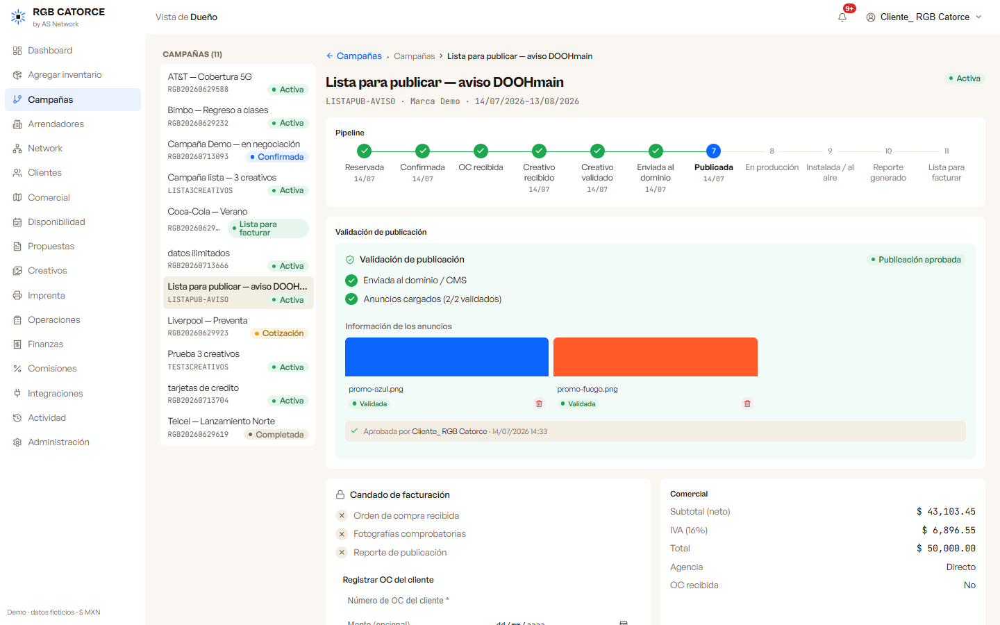
Enviar al dominio y validar la publicación
- En el detalle de la campaña, panel «Validación de publicación», pulsa Enviar al dominio (en digitales exige al menos un creativo cargado).
- Un revisor pulsa Aprobar publicación (o Rechazar indicando el motivo).
- En campañas digitales, aprobar dispara la publicación a DOOHmain (ver §13). Al aprobar, la campaña pasa a Activa y el pipeline avanza a Publicada.
El candado de facturación
El panel «Candado de facturación» exige tres condiciones: OC recibida (registrada con número, monto, fecha y documento), fotografías comprobatorias (de las OT) y reporte de publicación. Cuando las tres se cumplen, la campaña queda Lista para facturar.
11Comisiones
Ruta: /demo/comisiones · Dueño Comercial
Para qué sirve
Ajusta la comisión por agencia y asigna la agencia a cada cliente directo (lo que determina la comisión aplicada). La comisión es un atributo de la agencia, no del cliente directo.
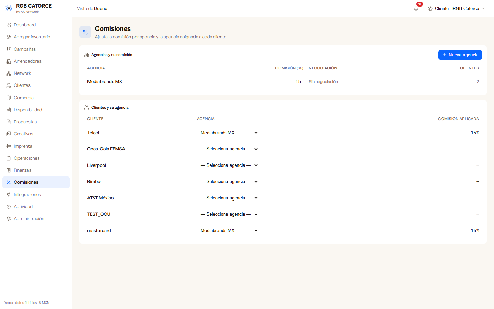
Cómo se usa
- Crea una agencia con Nueva agencia (comisión + negociación validada).
- Ajusta la comisión en línea (edita el campo → Guardar).
- Valida/quita la negociación de la agencia.
- En la tabla «Clientes y su agencia», asigna a cada cliente su agencia; la comisión aplicada se toma automáticamente.
12Creativos
Ruta: /demo/creativos · Dueño Comercial
Para qué sirve
Subir y aprobar las imágenes/artes de cada campaña y asignar cuál se exhibe en cada slot reservado. Solo se listan campañas con slots reservados o con algún creativo.
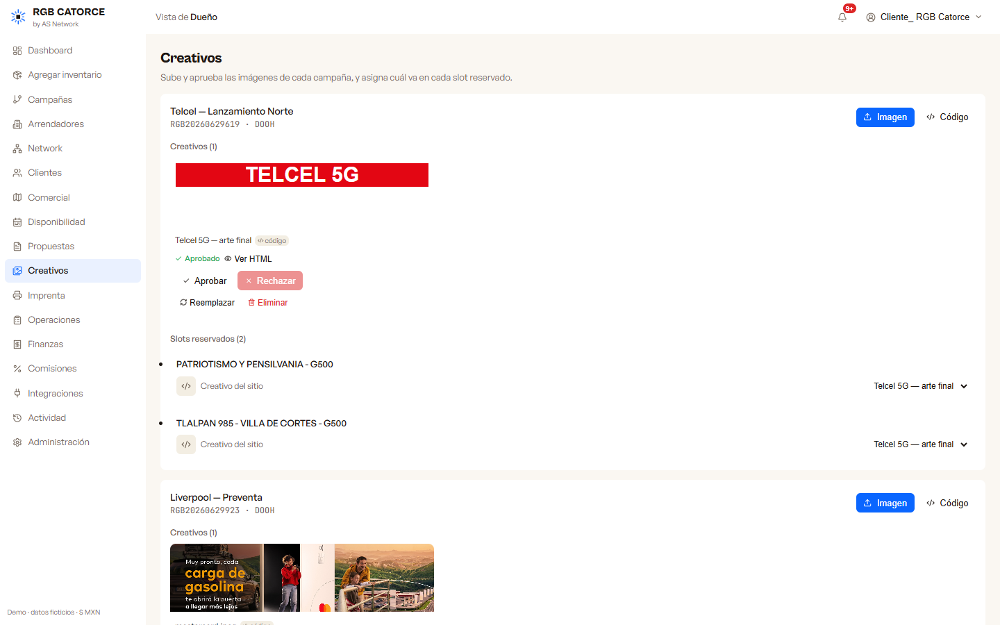
Cómo subir y aprobar un creativo
- En la tarjeta de la campaña, pulsa Imagen y elige un archivo (máx. 5 MB) — o Código para pegar HTML.
- El creativo queda en Pendiente. Pulsa Aprobar para pasarlo a Aprobado.
- Asigna el creativo aprobado a los slots reservados (input «veces» en digital, o el selector en fijo).
Aprobar, rechazar, reemplazar y bajar
- Aprobar es definitivo: una vez aprobado, el botón Rechazar se deshabilita.
- Reemplazar (Reemplazar): sube un arte nuevo; retira el anterior de DOOHmain (si estaba publicado) y deja el creativo en Pendiente para volver a aprobar y publicar.
- Bajar/eliminar (Eliminar): pide confirmación. Si el creativo ya estaba publicado, la campaña se finaliza pero el arte no se puede quitar de DOOHmain por API, así que queda marcado «Retirado · pendiente en DOOHmain» para que lo quites manualmente en el panel de DOOHmain.
13Publicar creativos a DOOHmain
Se dispara desde el panel «Validación de publicación» de la campaña · Dueño Comercial
Para qué sirve
Publicar los creativos validados de una campaña en las pantallas digitales de DOOHmain (el CMS/red DOOH externo). La publicación se dispara al aprobar la publicación de la campaña.
Cómo se publica (paso a paso)
- Sube y aprueba los creativos de la campaña (§12).
- En el detalle de la campaña, Enviar al dominio.
- Pulsa Aprobar publicación. Aparece el aviso «Aprobar y publicar en DOOHmain».
- Confirma con Sí, publicar. Cada creativo validado se sube a la pantalla digital correspondiente.
Reglas importantes de la publicación
- Solo pantallas digitales. Los sitios fijos nunca se suben a DOOHmain. Una campaña fija (OOH) no publica nada; una híbrida publica solo su parte digital.
- 1 campaña = 1 sublista. El folio de la campaña es el nombre de la sublista en DOOHmain.
- Solo creativos validados (aprobados) se publican.
- Se sube la imagen, no el HTML: el sistema extrae la imagen embebida del creativo (DOOHmain no acepta HTML).
14Imprenta (sitios fijos)
Ruta: /demo/imprenta · Dueño Imprenta
Para qué sirve
Gestiona las órdenes de impresión para sitios fijos (OOH e híbridas), del arte al montaje. Las campañas 100 % digitales (DOOH) no imprimen y no aparecen aquí.
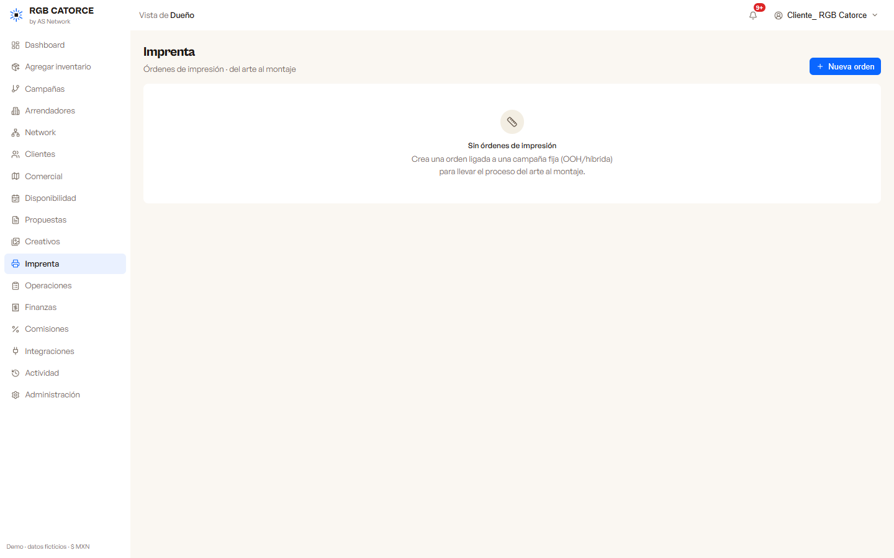
Cómo se usa
- Pulsa Nueva orden, elige campaña (fija/híbrida), sitio, material, medidas y proveedor. Crear orden (nace en «Arte recibido»).
- Pulsa Avanzar para recorrer el proceso: Arte recibido → Validado → En producción → Impreso → Listo para montaje.
- Pulsa Aprobar prueba de color cuando corresponda.
15Operaciones (Órdenes de trabajo)
Ruta: /demo/operaciones · Dueño Operaciones
Para qué sirve
Órdenes de trabajo (OT) para la cuadrilla en campo: montaje, mantenimiento, inspección e instalación con evidencias en sitios fijos, con seguimiento de SLA.
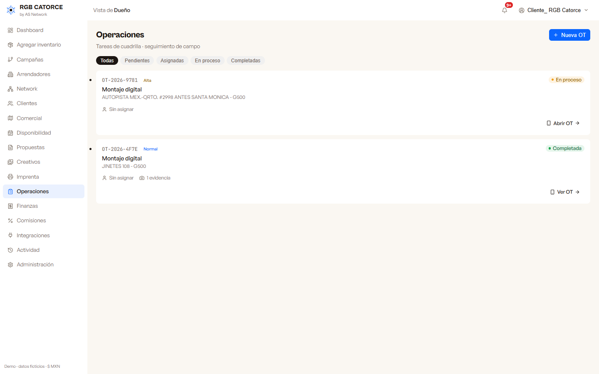
Cómo crear y ejecutar una OT
- Pulsa Nueva OT: tipo de tarea, descripción, campaña/sitio, prioridad, fecha compromiso y responsable. Crear OT.
- La cuadrilla abre la OT (Abrir OT), marca el checklist, toma la foto comprobatoria y pulsa Capturar ubicación.
- Pulsa Cerrar OT (se habilita solo con checklist completo + foto + ubicación). La evidencia alimenta el candado de facturación de la campaña.
16Finanzas
Ruta: /demo/finanzas · Dueño Finanzas
Para qué sirve
Facturación y cobranza de las campañas. Solo se puede facturar una campaña cuando cerró su candado de facturación (OC + fotos + reporte).
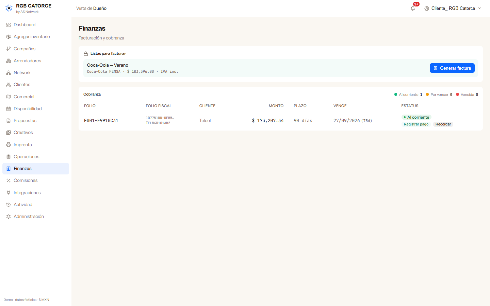
Cómo se usa
- Generar factura: en «Listas para facturar», pulsa Generar factura, elige plazo (60/90/120 días) y Emitir factura.
- Registrar pago: en la tabla de Cobranza, Registrar pago. Usa Liquidar total o Registrar abono (parcial).
- Recordar cobro: pulsa Recordar en la fila de la cobranza.
17Integraciones
Ruta: /demo/integraciones · Dueño
Para qué sirve
Panel de conectores externos: AdMobilize (Computer Vision), CMS/players DOOH, y facturación fiscal (CFDI). Sin credenciales devuelven datos simulados; se activan definiendo su variable de entorno.
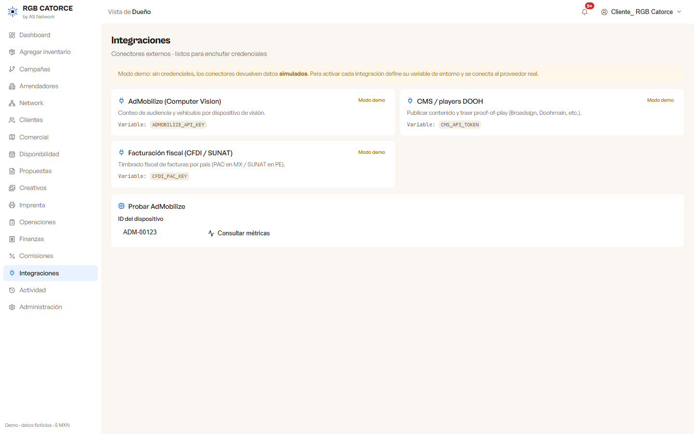
Puedes probar el conector AdMobilize: escribe un ID de dispositivo y pulsa Consultar métricas para ver vehículos, personas, velocidad promedio y ventana.
18Actividad (bitácora)
Ruta: /demo/actividad · Dueño
Para qué sirve
Bitácora de acciones: registra quién hizo qué y cuándo (reservar, confirmar, cerrar OT, facturar…). Es de solo consulta y filtrable por fecha, hora y usuario.
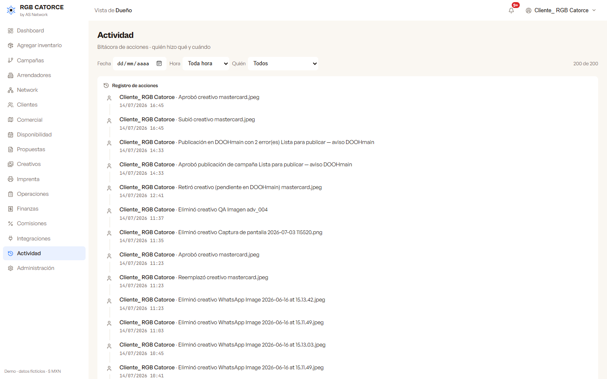
19Administración
Ruta: /demo/administracion · Dueño
Para qué sirve
Centro de gestión de usuarios, roles/permisos y configuración del negocio. Tres pestañas: Usuarios, Roles y permisos, Configuración.
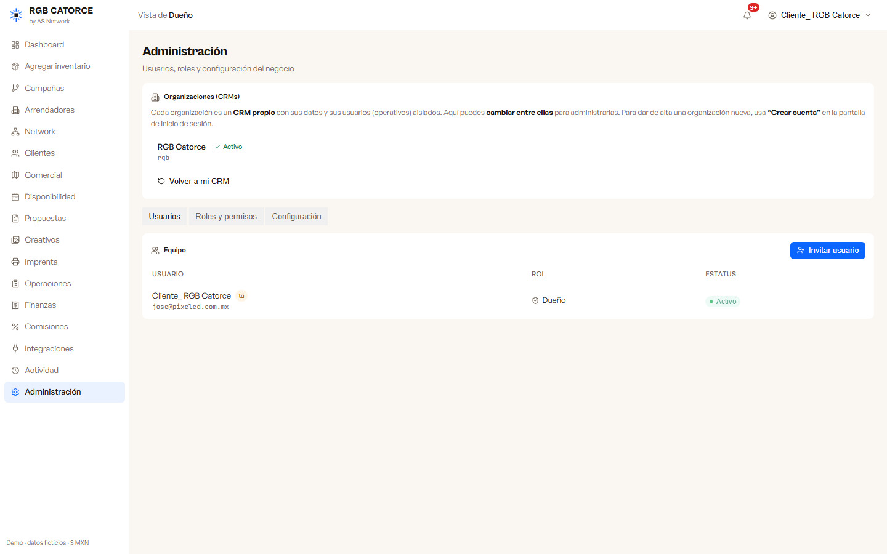
Cómo invitar a un usuario
- Pestaña Usuarios → Invitar usuario.
- Captura nombre, correo, cargo, rol y contraseña (≥6). Crear usuario.
- Después puedes cambiar su rol o activarlo/desactivarlo desde la tabla.
La pestaña Configuración ajusta el negocio: logo y nombre de la empresa, IVA(s), parámetros del loop digital (tamaño del loop, duración por slot, slots por loop), plazos de cobranza y tipos de tarea de cuadrilla.
20Configuración de la cuenta
Ruta: /demo/configuracion · todos los usuarios internos
Para qué sirve
Ajustar el nombre de la empresa (solo Dueño) y los datos de tu cuenta (correo y contraseña). Se accede desde el menú de usuario en la barra superior.
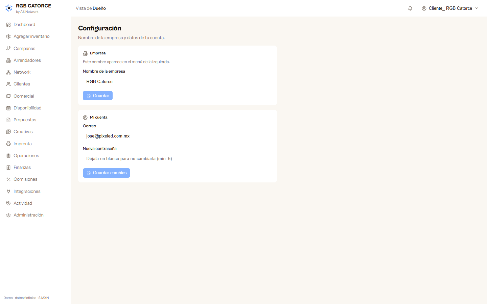
Cambiar tu correo/contraseña: en «Mi cuenta», edita el correo y/o escribe una nueva contraseña (mín. 6; déjala en blanco para no cambiarla) y pulsa Guardar cambios.
21Portales del cliente y OT móvil
Vistas externas para el cliente y la cuadrilla
Portal de seguimiento de campaña
El cliente abre un enlace con token (sin login) y ve el avance de su campaña (pipeline sin datos financieros), las ubicaciones reservadas y las evidencias de instalación. Es de solo lectura. Se comparte desde la campaña interna con el enlace «Portal del cliente».
Portal para subir creativos
El cliente abre su portal privado (por token) y sube el material creativo arrastrando el archivo (JPG, PNG, PDF, MP4, MOV, máx. 500 MB). Los materiales quedan como «Pendiente» hasta que internamente se aprueban/rechazan.
Propuesta pública (aceptación)
- El comercial comparte la liga de la propuesta (Copiar liga).
- El cliente abre la liga, revisa sitios y total.
- Escribe su nombre y pulsa Aceptar propuesta. Queda registrada la aceptación con fecha y hora, y el equipo comercial es notificado.
También existe una entrada por código: el cliente teclea el folio de su propuesta para abrirla sin el enlace directo.
OT móvil (instalador en campo)
- El instalador abre el enlace de la OT en el teléfono.
- Marca el checklist, pulsa Tomar foto (cámara) y Capturar ubicación.
- Pulsa Cerrar OT. La evidencia se envía al pipeline de la campaña y aparece en el portal de seguimiento del cliente.
Portal de clientes con login (reportes de servicio)
Portal con cuenta (correo + contraseña) donde el cliente ve sus sitios asignados, los reportes de servicio (OT) de cada sitio y su detalle, con chat cliente-técnico (adjuntando fotos) y evidencias fotográficas.
Anexo A · Roles y permisos
Capacidades: V=Ver, C=Crear, A=Aprobar, F=Facturar. El Dueño es superusuario.
| Módulo | Dueño | Comercial | Operaciones | Imprenta | Finanzas |
|---|---|---|---|---|---|
| Dashboard | V | V | — | — | V |
| Comercial | V C A | V C | V | — | — |
| Arrendadores | V C A | — | — | — | — |
| Network | V C | V | — | — | — |
| Operaciones | V C A | — | V C | V | — |
| Imprenta | V C A | — | V | V C | — |
| Finanzas | V C F | — | — | — | V C F |
| Administración | V C A | — | — | — | — |
Creativos y Validación de publicación usan el permiso del módulo Comercial (crear) → Dueño y Comercial.
Anexo C · Glosario
| Término | Significado |
|---|---|
| OOH / DOOH | Out-Of-Home (medios exteriores fijos) / Digital-OOH (pantallas digitales). |
| Sitio fijo | Espectacular, valla, muro, puente o mobiliario. Se imprime; reserva exclusiva por periodo. |
| Pantalla digital | Pantalla que se comercializa por slots; se publica en DOOHmain. |
| Slot | Espacio de reproducción en una pantalla digital (por defecto 12 slots de 20 s). 1 slot = 1 campaña. |
| Sublista | Lista en DOOHmain que agrupa el contenido de una campaña; su nombre es el folio de la campaña. |
| Método del divisor | Cálculo bruto → neto: neto = base × (1 − comisión%). |
| Candado de facturación | OC recibida + fotos comprobatorias + reporte de publicación. Habilita facturar. |
| OT | Orden de trabajo para la cuadrilla en campo. |
| Tentativa / Confirmada | Estados de reserva. La tentativa caduca sola a los 7 días. |
Manual de usuario de SPACES OS · RGB Catorce S de RL de CV (PIXELED) · Este documento describe el sistema tal como opera actualmente. Los importes se manejan en pesos mexicanos (MXN).